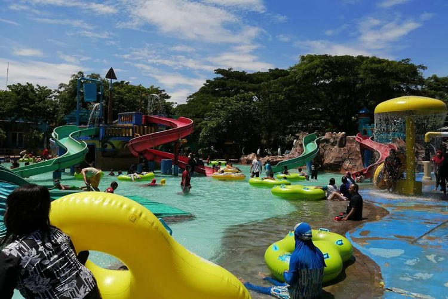
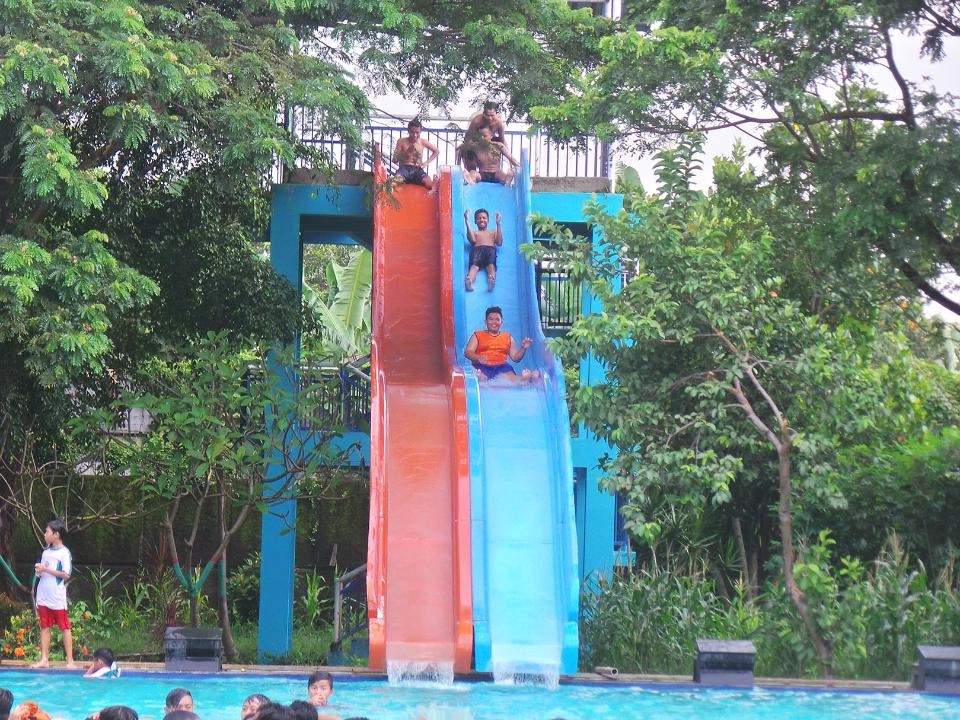
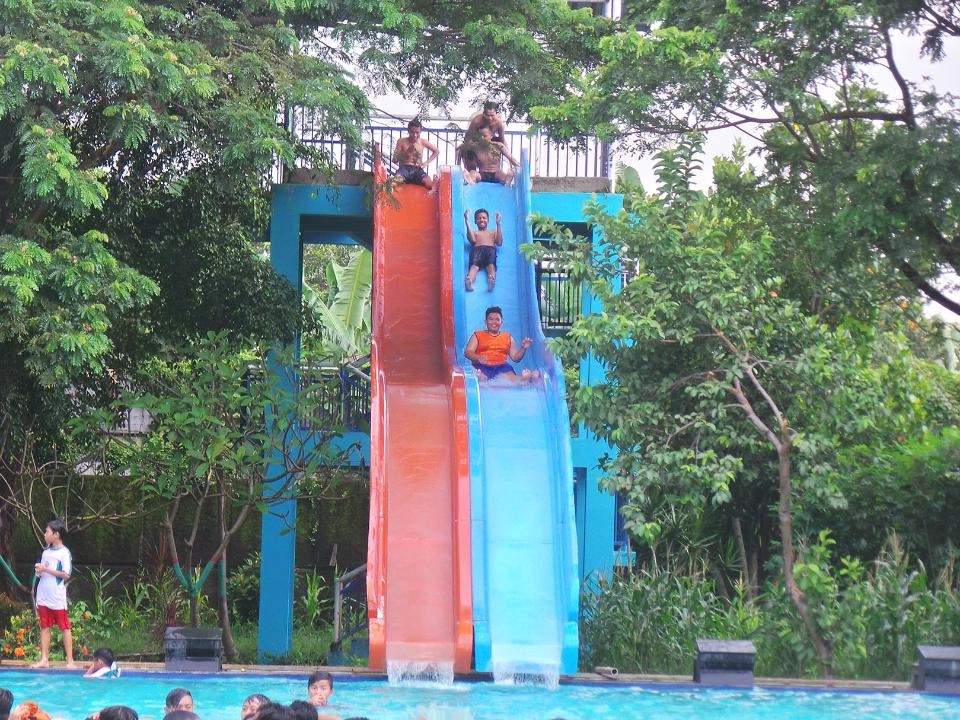

Wahana dan Fasilitas
Wahana 1: Kolam anak. Rasakan sensasi ombak besar di kolam ombak kami!
Wahana 2: Seluncuran Air. Nikmati berbagai jenis seluncuran air yang menantang!
Selamat datang di Waterpark Bahari Tegal! Nikmati keseruan bermain air dan berbagai wahana menarik.
Wahana 1: Kolam anak. Rasakan sensasi ombak besar di kolam ombak kami!
Wahana 2: Seluncuran Air. Nikmati berbagai jenis seluncuran air yang menantang!
Jika ada pertanyaan, silakan hubungi kami di: